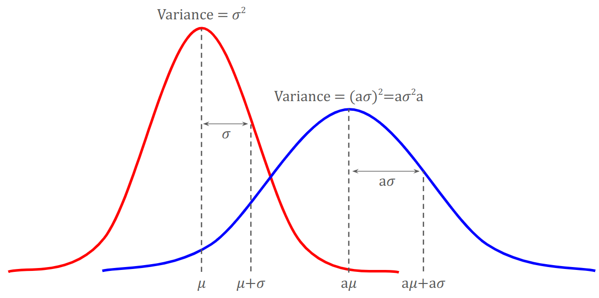
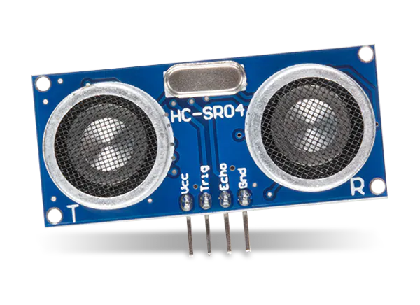
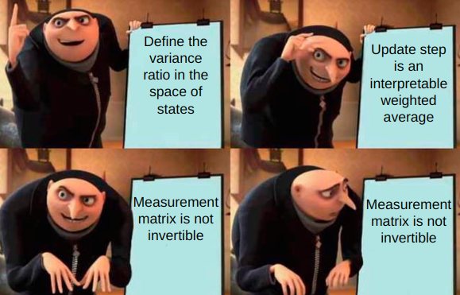

The Kalman Filter is a powerful tool for combining information in the face of uncertainty,
and is used widely throughout science and engineering for tracking dynamic systems.
Unfortunately, most of the explanations you'll find are either mathematically dense to
the point of being impenetrable, and/or leave a lot of questions remaining as to why we
intuitively should expect the equations to look as they do. In this article, I hope to
teach you how deep principles in probability and linear algebra (which you probably
already know!) naturally lead to the equations of the Kalman Filter. I've also made
a series of interactive diagrams that will hopefully give you a better
feel for the different parameters in all of their intricacy, and understand both the power and limitations
of this method.
What is the Kalman Filter?
The primary goal of the Kalman Filter is to estimate the state of a dynamical system.
The need for state estimation shows up throughout engineering: if you're trying to drive a car, you first need to know where you
are and how fast you're going before you can intelligently turn the steering wheel.
If you're controlling the central heating in a building, it's very helpful to know
the temperature in the rooms. The challenge is that although we often have many sensors,
they are usually noisy and cannot individually perceive the full state. These sensors need
to be combined with each other and with the engineer's knowledge of the system in order
to get a complete picture.
The Kalman Filter is a theoretically optimal way to combine different sources of information into one unified state estimate.
Building a model
The easiest way to wrap your head around the Kalman Filter is with an example.
Throughout this artile, we'll use this simple robot.
We begin with a large question: How to model the world? A common engineering approach is
to think of the minimum set of variables needed to make a complete description of the system,
and then put them all together in a state vector. We can never know the true state,
so we'll add a little hat to indicate that this vector is just an estimate.
In our simple example, the only variables we need to track are the position \(p\)
and velocity \(v\) of the robot.
$$ \text{Estimated State vector }\stateEstimate = \begin{bmatrix} p \\ v \end{bmatrix}
= \begin{bmatrix} \text{position} \\ \text{velocity} \end{bmatrix} $$
Once we've defined our state vector, we need to model how it evolves over time.
For our robot, we can use a simple kinematics formula:
$$ \begin{alignat}{3}
p_{\discreteTime} &= p_{\discreteTime-1} &+& \Delta t &v_{\discreteTime-1} \\
v_{\discreteTime} &= 0 &+& &v_{\discreteTime-1} \\
\end{alignat}
$$
We'll package this up into matrix form so it is easy to use later.
We'll call the matrix that converts from the old state to a new state
using the dynamics model the state transition matrix \(\stateTransition\).
$$ \text{State Transition Matrix } \stateTransition = \begin{bmatrix} 1 & \Delta t \\ 0 & 1 \end{bmatrix} $$
$$
\begin{alignat}{3}
\begin{bmatrix}
p_{\discreteTime} \\
v_{\discreteTime}
\end{bmatrix}
&=
\begin{bmatrix}
1 & \Delta t \\
0 & 1
\end{bmatrix}
&
\begin{bmatrix}
p_{\discreteTime-1} \\
v_{\discreteTime-1}
\end{bmatrix} \\
\stateEstimate_{\discreteTime} &= \stateTransition & \stateEstimate_{\discreteTime-1} \\
\end{alignat}
$$
Now we have a simple dynamical model of our robot, but it fails to include one
thing that is common to most robots: a way to control it. In the demo above, you
(as the operator) are able to control the robot with a throttle command \(u\),
which can range between [0,1]. Inherently this [0,1] value has no meaning, but
the robot is programmed so that the throttle controls the angular speed of
the wheels, which in turn determines the robot's linear velocity.
If we assume that the has radius \(r\), the maximum angular speed
is \(\omega_{max} \) (and that the wheel speed perfectly matches the control
command), then we have the following relationship between the throttle command \(u\) and the velocity \(v\) of the robot:
$$ v = r \omega = r \omega_{max} u $$
As with the state equation, we'll package this up in matrix form by defining
the control matrix \(\controlMatrix\), which determines how the input
vector \(\controlInput \) impacts the state. Note that the throttle
has no effect on the position, so the first row of \(\controlMatrix\) is zero.
$$ \text{Control Input Vector } \controlInput = \begin{bmatrix} u \end{bmatrix} $$
$$ \text{Control Matrix } \controlMatrix = \begin{bmatrix} 0 \\ r \omega_{max} \end{bmatrix} $$
Combining this with our dynamics model, our complete dynamical model looks like this:
$$
\begin{alignat}{5}
\begin{bmatrix}
p_{\discreteTime} \\
v_{\discreteTime}
\end{bmatrix}
&=
\begin{bmatrix}
1 & \Delta t \\
0 & 1
\end{bmatrix}
&
\begin{bmatrix}
p_{\discreteTime-1} \\
v_{\discreteTime-1}
\end{bmatrix}
&+
\begin{bmatrix}
0 \\
r \omega_{max} \\
\end{bmatrix}
&
\begin{bmatrix}
u_{\discreteTime} \\
\end{bmatrix} \\
\stateEstimate_{\discreteTime} &= \stateTransition & \stateEstimate_{\discreteTime-1} &+ \controlMatrix & \controlInput_{\discreteTime} \\
\end{alignat}
$$
In summary, we predict the new state by applying the dynamics model to the previous state estimate, and adding
a correction term for known influences like the control input.
$$\state_{\discreteTime}$$
=
$$\stateTransition$$
$$\state_{\discreteTime -1}$$
+
$$\controlMatrix$$
$$\controlInput_{\discreteTime}$$
+
$$\mathbf{0}$$
2.0
1.0
=
1.00
0.01
0.00
1.00
0.00
0.00
+
0.00
1.00
0.00
+
0
0
$$\stateCovariance_{\discreteTime}$$
=
$$\stateTransition$$
$$\stateCovariance_{\discreteTime - 1}$$
$$\stateTransition^T$$
+
$$\processNoiseCovariance$$
0
0
0
0
=
1.00
0.00
0.00
1.00
0.10
0.00
0.00
0.10
1.00
0.00
0.00
1.00
+
0.10
0.00
0.00
0.10
Bringing Uncertainty into the Model
The linear model we derived above is great and all, but let's be honest, it's not very realistic.
In the real world, the robot might slip and bounce over the terrain, the motors might not
exactly reach the commanded speed. In other words, there is random noise introduced by the
messiness of the environment, which in turn makes our state estimate less certain.
One method that can represent both the uncertainty in our state estimate
and the random noise introduced by the environment is to assign each of them a
probability distribution. For simplicity, we assume that both of these distributions are gaussian.
Why a gaussian?
There are a few really compelling reasons to choose a gaussian:
We can parametrize the distribution with just the mean and variance, so it is numerically easy to update
When we combine two independent gaussians into one estimate, the result is also a gaussian
Mathematicians have proven (the Central Limit Theorem)that the combined effect of many random processes (even if individually they are non-gaussian)
will result in a gaussian distribution
Take heed: we choose a gaussian mostly because it is numerically convenient, but in practice many things (even something as simple
as a \( sin \theta \) term in the dynamics model introduced by turning around), will make the distribution non-gaussian.
So now, instead of representing our state estimate with a single vector, we'll say that our state estimate
is a normal distribution parametrized by a mean \(\state\) and a covariance \(\stateCovariance\).
$$ \stateEstimate \sim \gaussian \left( \state, \stateCovariance \right) $$
Hopefully you've already seen a 1D normal distribution
TODO: Diagram: Play around with a single gaussian: Covariance, mean
Now comes an important point: In our dynamics equation above we know how to apply the matrix \(\stateTransition\)
to the state estimate \( \stateEstimate \) when it was a single vector. But now our estimate is a gaussian,
so we need to apply \(\stateTransition\) to the whole distribution. Fortunately, the mean is a single point,
so we can directly apply the state transition matrix as we did before. The variance on the other hand is the
average "squared-distance" from the mean, so how should it be treated?
We'll introduce a very useful rule for multiplying a gaussian distribution
\(\gaussian \left( \mathbf{\bar{\mu}}, \mathbf{\Sigma} \right) \) by a matrix \( \mathbf{A} \):
$$
\begin{align}
\text{If you linearly transform the mean: } &
\mathbf{\bar{\mu}}_{\discreteTime} = \mathbf{A} \mathbf{\bar{\mu}}_{\discreteTime-1}
\\
\text{ then the covariance is: } &
\mathbf{\Sigma}_{\discreteTime} = \mathbf{A} \mathbf{\Sigma}_{\discreteTime-1} \mathbf{A}^T
\end{align}
$$
Why multiply the covariance by \( \mathbf{A} \) on the left and right?
One way you can remember this is to think back to what happens when you multiply a 1D normal distribution by a scalar.
The standard deviation \( \sigma \) will scale linearly, and the variance is the standard deviation squared
(which we can write in a way that is suggestive of what the operation looks like in higher dimensions).

The other thing we need to know is that if we add or subtract two independent, normally distributed
random variables, then their variances add. (see
AP Central's explanation
for a refresher.)
With this knowledge of probability, we have actually arrived to the point where we can write out the first component of the Kalman Filter:
the Predict Step! We'll define the covariance of the state estimate to be \(\stateCovariance\), and the mean to be \(\state\).
To handle environmental noise, we'll also add a noise term with mean 0 and covariance \(\processNoiseCovariance\). Writing this out, we have:
Fundamentally, the predict step describes how to predict the a new gaussian state estimate from the previous estimate,
based on our dynamical model of the system. Let's try running this algorithm in state space:
TODO: Diagram: Predict Step State Space diagram
Sensing the environment

Ok so the state ... isn't terrible, but it's not great either, and the variance is exploding (which is reasonable considering the
dynamics equation has no feedback).
Fortunately, we have endowed this robot with an
ultrasonic distance sensor
that should help.
This sensor will output a measurement vector containing one value corresponding to the distance to the nearest object.
$$ \text{Measurement Vector } \measurement = \begin{bmatrix} \text{distance} \end{bmatrix} $$
The only question is, how do we incorporate these measurements into the filter?
To start with, we need a linear model that relates the measurement vector \( \measurement \) to the state.
Our first instinct might be to write a matrix that converts from the measurement vector to the state vector
(we're trying to update the state after all). The problem is
that since the sensor doesn't measure the velocity, there is no way to fully recover the state from the measurement
using a linear transformation. We can however think about this from a more causal perspective:
In reality we know that the robot is in some true state \( \trueState \), and when the sensor takes a measurement
of that state it will generally follow a linear process. If we define the measurement matrix \(\measurementMatrix\)
to describe this linear measurement process, then in the ideal case we can write:
$$ \measurement_{\text{ideal}} = \measurementMatrix \trueState $$
Let's get into some
implementation details
to see what \(\measurementMatrix\) looks like.
Most ultrasonic sensors do not directly provide a distance. Instead, they measure
the time (in microseconds, \( \mu s \)) it takes for a pulse of sound to travel to the wall and back. In order to convert from \( \mu s \)
to meters, we need to multiply by a factor of \( \frac{2 \times 10^6 }{c} \), where \(c\) is the speed of sound in air (343 m/s),
there are \( 10^6 \mu s\) per second, and the factor of 2 accounts for the sound traveling double the distance (to the wall, and then back).
Thus to convert from the measurement vector to the state vector, the measurement matrix would be:
$$ \text{Measurement Matrix } \measurementMatrix = \begin{bmatrix} \frac{2 \times 10^6 }{c} & 0 \end{bmatrix} $$
Of course, no sensor is ever perfect, so we will also say that when the sensor takes a measurement
it will also introduce some sensor noise. We assume that the noise is normally distributed with
zero mean and covariance \(\measurementNoiseCovariance\) (which hopefully is listed in the sensor datasheet).
$$ \text{Measurement Noise} \sim \gaussian \left( 0, \measurementNoiseCovariance \right) $$
Now we can say that when the robot is in state \( \trueState \), the measurements you can expect to get will
follow a normal distribution with covariance \(\measurementNoiseCovariance\) and mean \(\measurementMatrix \trueState\).
Of course, we never actually see the entirety of this distribution; the robot will only ever take
individual measurements. Since \( \measurement \) is the only sample we have,
we will say that every time we read some measurement, we infer that the distribution of possible
measurements is a gaussian centered at \( \measurement \) with covariance \(\measurementNoiseCovariance\):
$$ \text{Possible Measurements}\sim \gaussian \left( \measurement, \measurementNoiseCovariance \right) $$
To summarize, we've defined the measurement matrix \( \measurementMatrix \), whose role is to
convert from the space of states to the space of measurements. \( \measurementMatrix \) can be
applied to the true state to get the noiseless measurement, but it can also be applied to
the entire distribution of our current state estimate, which yields the measurement we expect given
the current state estimate.
Update Step: Combining two gaussians
At this point, we have one normal distribution that represents our belief of the true state of the robot,
and another normal distribution that represents the measurements you'd expect to get from the true state.
How can we combine these two distributions into one new state estimate?
$$ \text{Estimate of the true state from Prediction Step: }\gaussian \left( \state, \stateCovariance \right) $$
$$ \text{Measurement distribution inferred from the actual measurement: } \gaussian \left( \measurement, \measurementNoiseCovariance \right) $$
The first challenge we face is that we're trying to combine different "types" of things.
The state estimate distribution has a mean and variance with a particular dimension and units,
while the measurement distribution has entirely different dimensions and units. Before
we can do any combining, we have to first get both distributions into the same space.
There are two ways to do approach this. Click on the one you want to follow!
The first way we could approach combining the measurement distribution
with the state estimate distribution can be outlined as follows:
See what measurement we should expect given our current state estimate
Combine this with the actual measurement we got
Convert a "fused measurement" back to state space
Let's break this down.
In order to put our two distributions on the same footing, we'll multiply the
state estimate distribution by \( \measurementMatrix \) to bring it into
to the space of measurements.
Remembering our
rule for multiplying gaussians, we'll get two normal distributions in the same space:
The measurement distribution you'd expect given your Predicted State: \( \gaussian \left( \measurementMatrix \state, \space \measurementMatrix \stateCovariance \measurementMatrix^T \right) \)
The measurement distribution inferred from the actual measurement: \( \gaussian \left( \measurement, \space \measurementNoiseCovariance \right) \)
Now that we have two distributions in the same space, we can stop to think: what would we like to
be true when we combine these estimates? Here are some things that would be nice:
The mean of the combined estimate should always lie between the means of the two original estimates
The uncertainty (ie. variance) should be smaller than the uncertainty of either of the original estimates
The resulting estimate should more closely resemble the distribution in which we have higher confidence (ie. less variance).
For example, if we know that the ultrasonic sensor is much more accurate than our dynamics model (which is propagated blindly), then
we'd want our combined estimate to consist mostly of the sensor measurement, with a hint of the dynamics model
to account for small measurement noise. Since we're making use of all of our information, we should
be more certain of our combined estimate than either of the original estimates independently.
But how much, exactly, of each estimate do we want to use? One reasonable approach is to weight each distribution
by the inverse of its variance, so the distribution with less uncertainty (ie. smaller variance) will play more of a role.
To write this mathematically, we first define the variance ratio (in the space of measurements):
$$ \varianceRatio =
\frac{\measurementMatrix \stateCovariance \measurementMatrix^T}{\measurementMatrix \stateCovariance \measurementMatrix^T + \measurementNoiseCovariance} =
\frac{\text{Uncertainty from state estimate}}{\text{Total uncertainty from the state estimate and sensor noise}} $$
Wait, you can write a matrix inverse like a fraction?!
Technically, writing a matrix fraction is not legitimate because matrices (unlike scalars)
very much care whether the numerator is multiplied on the left or right of the denominator,
but the fraction form does not contain this information. That being said, the insight that
this is a simple ratio is hieghtened by the fractional notation, so I ask that you simply
remember that the inverse goes on the right.
Is there a deeper mathematical reason why we use the variance ratio?
Yes! You may have learned about Bayes' Rule, which describes how to update your beliefs
in light of new information. In particular, it says that
$$ P( A | B ) = \frac{P( B | A ) P( A )}{P( B )}$$
$$ \text{Posterior} = \frac{\text{Likelihood} \times \text{Prior}}{\text{Normalizing constant}} $$
In our case, the prior is the state estimate from the prediction step,
the likelihood comes from our measurement, and the posterior is our combined estimate.
$$ P(\state | \measurement) = \frac{P(\measurement | \state) P(\state)}{P(\measurement)} $$
The primary peculiarity of the Kalman Filter is that instead of having individual numbers
for each probability in the equation, now we have gaussian distributions. Nonetheless, the
principle of multiplying the likelihood by the prior and normalizing is the same. If you
multiply two gaussian probability density functions, you can actually show that
the variance ratio emerges! For example, in 1D you could algebraically show :
$$ C_1 \exp \left( -\frac{(x-\mu_1)^2}{2\sigma_1^2} \right) \times
C_2 \exp \left( -\frac{(x-\mu_2)^2}{2\sigma_2^2} \right) =
C_3 \exp \left( -\frac{(x-\mu_3)^2}{2\sigma_3^2} \right) $$
Where the \( C \) terms are normalization constants, and the mean and variance of the resulting distribution are:
$$ \mu_3 = \left( 1 - \frac{\sigma_1^2}{\sigma_1^2 + \sigma_2^2} \right) \mu_1 +
\frac{\sigma_1^2}{\sigma_1^2 + \sigma_2^2} \mu_2 $$
$$ \sigma_3^2 = \sigma_1^2 - \frac{\sigma_1^2}{\sigma_1^2 + \sigma_2^2} \sigma_1^2 $$
Then we can use this to write a weighted sum of each distribution:
$$ \state_{\discreteTime} = \measurementMatrix^{-1} \left[ \left( \identityMatrix - \varianceRatio \right) \measurementMatrix \state + \varianceRatio \measurement \right] $$
Hold on, where did that \(\measurementMatrix^{-1}\) come from? Remember, at the end of the equation we need to get something that is in the space of states,
but we're currently in the space of measurements. Since \(\measurementMatrix\) converts from state space to measurement space,
we'd imagine that \(\measurementMatrix^{-1}\) goes the other way from measurements to states.
There's only one problem: \(\measurementMatrix\) is not necessarily square, so it cannot be inverted.
Fortunately, there's a workaround! All we have to do is suspend our disbelief and pretend that
\(\identityMatrix = \measurementMatrix^{-1} \measurementMatrix\). Then we can distribute the \(\measurementMatrix^{-1}\)
into the formula and cancel it with existing \(\measurementMatrix\) terms, including the leading \(\measurementMatrix\) of
the variance ratio formula. The variance ratio without its leading \(\measurementMatrix\) is actually so important that
we'll give it a name:
$$ \text{The Kalman Gain } \kalmanGain = \stateCovariance \measurementMatrix^T \left( \measurementMatrix \stateCovariance \measurementMatrix^T + \measurementNoiseCovariance \right)^{-1} $$
Then we can write the variance ratio as:
$$ \varianceRatio = \measurementMatrix \kalmanGain $$
Now we can proceed in applying the distributive property to get our state update equation:
$$ \begin{align*}
\state_{\discreteTime} &= \measurementMatrix^{-1} \left[ (\identityMatrix - \varianceRatio) \measurementMatrix \state_{\discreteTime-1} + \varianceRatio \measurement \right] \\
&= \left[ \left( \measurementMatrix^{-1} - \measurementMatrix^{-1} \varianceRatio \right) \measurementMatrix \state_{\discreteTime-1} + \measurementMatrix^{-1} \varianceRatio \measurement \right] \\
&= \left( \measurementMatrix^{-1} - \kalmanGain \right) \measurementMatrix \state_{\discreteTime-1} + \kalmanGain \measurement \\
\state_{\discreteTime} &= \left( \identityMatrix - \kalmanGain \measurementMatrix \right) \state_{\discreteTime-1} + \kalmanGain \measurement \\
\end{align*}
$$
Great! Now we have a matrix formula to combine the means of two Gaussians. The only step left is to propagate the variances too,
which we can easily do using our
rule for multiplying Gaussians.
The equation above is known as the Joseph Form of the Covariance Update Equation.
There is also a simpler (though less numerically stable) form of this equation.
$$
\begin{align}
\stateCovariance_{\discreteTime} &= \left( \identityMatrix - \kalmanGain \measurementMatrix \right) \stateCovariance_{\discreteTime-1} \class{highlight-term}{ \left(\identityMatrix - \kalmanGain \measurementMatrix \right)^T} + \kalmanGain \measurementNoiseCovariance \kalmanGain^T \\
&= \left( \identityMatrix - \kalmanGain \measurementMatrix \right) \stateCovariance_{\discreteTime-1} \class{highlight-term}{ \left( \identityMatrix - \left(\kalmanGain \measurementMatrix \right)^T \right) } + \kalmanGain \measurementNoiseCovariance \kalmanGain^T \\
&= \left( \identityMatrix - \kalmanGain \measurementMatrix \right) \class{highlight-term}{ \stateCovariance_{\discreteTime-1} \left(\identityMatrix - \measurementMatrix^T \kalmanGain^T \right) } + \kalmanGain \measurementNoiseCovariance \kalmanGain^T \\
&= \class{highlight-term}{ \left( \identityMatrix - \kalmanGain \measurementMatrix \right) \left(\stateCovariance_{\discreteTime-1} - \stateCovariance_{\discreteTime-1} \measurementMatrix^T \kalmanGain^T \right) } + \kalmanGain \measurementNoiseCovariance \kalmanGain^T \\
&= \stateCovariance_{\discreteTime-1} - \kalmanGain \measurementMatrix \stateCovariance_{\discreteTime-1} - \stateCovariance_{\discreteTime-1} \measurementMatrix^T \kalmanGain^T + \class{highlight-term}{ \kalmanGain \measurementMatrix \stateCovariance_{\discreteTime-1} \measurementMatrix^T \kalmanGain^T + \kalmanGain \measurementNoiseCovariance \kalmanGain^T } \\
&= \stateCovariance_{\discreteTime-1} - \kalmanGain \measurementMatrix \stateCovariance_{\discreteTime-1} - \stateCovariance_{\discreteTime-1} \measurementMatrix^T \kalmanGain^T + \class{highlight-term}{ \kalmanGain \left(\measurementMatrix \stateCovariance_{\discreteTime-1} \measurementMatrix^T + \measurementNoiseCovariance \right) } \kalmanGain^T \\
&= \stateCovariance_{\discreteTime-1} - \kalmanGain \measurementMatrix \stateCovariance_{\discreteTime-1} \class{highlight-term}{ - \stateCovariance_{\discreteTime-1} \measurementMatrix^T \kalmanGain^T + \stateCovariance_{\discreteTime-1} \measurementMatrix^T \kalmanGain^T }\\
\stateCovariance_{\discreteTime} &= \stateCovariance_{\discreteTime-1} - \kalmanGain \measurementMatrix \stateCovariance_{\discreteTime-1}
\end{align}
$$
This is a much simpler version of the covariance update equation! It clearly gives the insight that with new information,
your uncertainty will always decrease. The only limitation is that, without quadratic terms keeping things symmetric,
small numerical errors can build up over time and lead to an invalid covariance matrix.
Here's an interactive diagram to visualize the whole process. The work done by the Kalman Gain is surrounded by a dashed box.
The other way we could approach combining the measurement distribution
with the state estimate distribution can be outlined as follows:
See what states could have led to the measurement we got
Combine this with our current state estimate
Let's break this down.
In order to put our two distributions on the same footing, we'll multiply the
measurement distribution by \( \measurementMatrix^{-1} \) to bring it into
the space of states. Remembering our
rule for multiplying gaussians, we'll get two normal distributions in the same space:
The state distribution from the prediction step:\( \gaussian \left( \state, \space \stateCovariance \right) \)
The state distribution inferred from the actual measurement: \( \gaussian \left( \measurementMatrix^{-1} \measurement, \space \space \measurementMatrix^{-1} \measurementNoiseCovariance (\measurementMatrix^{-1})^T \right) \)
(If you see something wrong here, suspend your disbelief and read on ... )
But how much, exactly, of each estimate do we want to use? One reasonable approach is to weight each distribution
by the inverse of its variance, so the distribution with less uncertainty (ie. smaller variance) will play more of a role.
To write this mathematically, we first define the variance ratio (in the space of states):
$$ \varianceRatioState = \frac{\stateCovariance}{\stateCovariance + \measurementMatrix^{-1} \measurementNoiseCovariance (\measurementMatrix^{-1})^T} =
\frac{\text{Uncertainty from state estimate}}{\text{Total uncertainty from the state estimate and sensor noise}} $$
Wait, you can write a matrix inverse like a fraction?!
Is there a deeper mathematical reason why we use the variance ratio?
Then we can use this to write a weighted sum of each distribution:
Great! It seems like this weighted sum does exactly what we need.
There's only one problem: \(\measurementMatrix\) is not necessarily square, so it
cannot be inverted.

Well, that kind of throws a wrench in everything. Fortunately, there is a workaround!
If we suspend our disbelief and do a bit of matrix algebra as if \( \measurementMatrix^{-1} \) exists,
we can avoid ever having to invert the measurement matrix. We'll use the following identities:
For any invertible matrices \(\mathbf{A}\), \(\mathbf{B}\) we have:
\( (\mathbf{A} \mathbf{B})^{-1} = \mathbf{B}^{-1} \mathbf{A}^{-1} \), and
\( (\mathbf{A}^{-1})^{-T} = (\mathbf{A}^T)^{-1} \),
and we can always multiply anywhere by the identity \( \identityMatrix = \measurementMatrix^{-1} \measurementMatrix = \measurementMatrix^T (\measurementMatrix^T)^{-1} \)
Now our Variance ratio is free of \( \measurementMatrix^{-1} \), but there is still one
more remaining in the weighted sum formula. In preparation to eliminate this remaining
\( \measurementMatrix^{-1} \), we'll separate out the trailing \( \measurementMatrix \)
from the rest of the formula. The variance ratio without the trailing \( \measurementMatrix \)
is actually so important that we'll give it a name:
$$ \text{The Kalman Gain } \kalmanGain = \stateCovariance \measurementMatrix^T \left[ \measurementMatrix \stateCovariance \measurementMatrix^T + \measurementNoiseCovariance \right]^{-1} $$
Then we can write the variance ratio as:
$$ \varianceRatioState = \kalmanGain \measurementMatrix $$
Now we can proceed in writing our state update equation without any remaining \( \measurementMatrix^{-1} \):
$$ \begin{align*}
\state &= (\identityMatrix - \varianceRatioState) \state + \varianceRatioState \measurementMatrix^{-1} \measurement \\
\state &= \left( \identityMatrix - \kalmanGain \measurementMatrix \right) \state + \kalmanGain \measurement \\
\end{align*}
$$
Great! Now we have a matrix formula to combine the means of two Gaussians. The only step left is to propagate the variances too,
which we can easily do using our
rule for multiplying Gaussians.
The equation above is known as the Joseph Form of the Covariance Update Equation.
There is also a simpler (though less numerically stable) form of this equation.
Here's an interactive diagram to visualize the whole process. The work done by the Kalman Gain is surrounded by a dashed box.
In each of our derivations, we've arrived at the same definition for the Kalman Gain:
$$ \text{The Kalman Gain } \kalmanGain = \stateCovariance \measurementMatrix^T \left( \measurementMatrix \stateCovariance \measurementMatrix^T + \measurementNoiseCovariance \right)^{-1} $$
However, we have also shown that there are two different ways to interpret this formula (so
long as you imagine that \( \measurementMatrix^{-1} \) exists). Rearranging \( \varianceRatioState = \kalmanGain \measurementMatrix \)
and \( \varianceRatio = \measurementMatrix \kalmanGain \) we have:
$$ \kalmanGain = \measurementMatrix^{-1} \varianceRatio = \varianceRatioState \measurementMatrix^{-1} $$
Therefore, we can choose to interpret the Kalman Gain as a two-step process that always takes measurements as inputs, then either:
weighs the input by the measurement-space variance ratio, then converts to state space
converts the input to state space, then weights it by the state-space variance ratio
The Full Algorithm
Eg. What you actually need to implement
Now that we have all the mathematical pieces of the Predict and Update steps,
we can write out the full algorithm! In practice, we write each step as a function that
takes the previous state estimate along with new information, and returns a new state estimate.
You should be calling the Predict function as often as you can
(the dynamics never stops so neither should your blind estimate),
but the update function can only be called when there is a new measurement.
If your sensor is fast, you might always call Predict immediately followed
by Update, but if your sensor is slow, 5 predict steps might go by with no update.
In more advanced implementations, you can define all of the matrices
(\(\stateTransition\), \(\controlMatrix\), \(\measurementMatrix\), etc.) to
vary with time (they even may change nonlinearly as time progresses).
We use the longer form of the covariance update formula (also known
as the Joseph Form) because it is numerically more stable.
Summary
The Kalman Filter is an algorithmic blueprint for incorporating different sources
of information into a unified probailistic state estimate. It outlines two ways to
propagate the current state estimate to the next:
Predict: Incorporate information about the default dynamics of the system
Update: Fuse sensor information with the most recent state estimate
using the Kalman Gain
The Kalman Gain is an operator that takes vectors in the
measurement space as input, and outputs the weighted contribution of that measurement
vector to the total state estimate. This operation can be interpreted as having two
steps (in either order):
Convert from the space of measurements to the space of states using \( \measurementMatrix^{-1} \)
Weight the contribution of the measurement to the state estimate in proportion
to the inverse of its variance (either \( \varianceRatio \) or \( \varianceRatioState \))
In practice the measurement matrix is not invertible, but by bundling these two steps together
we can define the Kalman Gain without ever using \( \measurementMatrix^{-1} \).
My aim with this article was to give you an intuitive understanding of how the Kalman Filter
works, but from here there is a lot of beatiful math that proves the Filter's optimality under certain
conditions, and also provides insight on how to handle situations that don't quite match this precise setup.
Hopefully while exploring this article you realized that there are many obvious
shortcomings. For example,
What if your model isn't linear? What if you don't know the covariance matrix for your sensors? How do small changes
in parameters like the timestep (or accumulation of numerical error) affect the filter's behavior?
As far as dealing with non-linearities, there are several different algorithms you should look into:
the Particle Filter, the Unscented Kalman Filter (UKF), and the Extended Kalman Filter (EKF). All three of these
are similar in that they combine probabilistic state and measurement information, but they differ in
how they incorporate non-linear process models and how they represent the state estimate distribution.
In total I've thrown you 17 variables -- that can be a lot to keep track of!
I've collected them all here so you have a single reference, though clicking
on the variables throughout the article will give the same information.
You can also choose the naming convention using the dropdown menu above,
which should make it easier to learn across multiple sources.
TODO: Make the highilght colors match the diagram colors